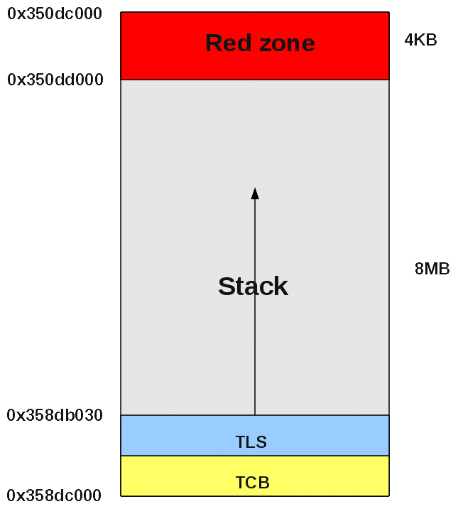

Go back to previous page
Go back to home page
Author:
R. Koucha
Last update:
28-Apr-2011
Why a thread creation could fail ?
Introduction
Creation of a thread
The 2.5 versus 2.8
version of the C library
Why pthread_create() could
fail ?
Solution
Problem of symbol version
Conclusion
About the author
Introduction
The pthread_create() service
from the pthread (NPTL) library, may fail returning
the ENOMEM or EAGAIN error. This papers
focuses on the reason why this could happen and how to solve the
problem.
Creation of a thread
The creation of a thread involves the following steps (output of the strace tool):
mmap(NULL, 8388608,
PROT_READ|PROT_WRITE, MAP_PRIVATE|MAP_ANONYMOUS, -1, 0) = 0x350dc000
mprotect(0x350dc000, 4096,
PROT_NONE) = 0
clone(child_stack=0x358db030,
flags=CLONE_VM|CLONE_FS|CLONE_FILES|CLONE_SIGHAND|CLONE_THREAD|CLONE_SYSVSEM|CLONE_SETTLS|CLONE_PARENT_SETTID|CLONE_CHILD_CLEARTID,
parent_tidptr=0x358db4f8,
tls=0x358e2930,
child_tidptr=0x358db4f8)=
6927
sched_setscheduler(6927,
SCHED_OTHER, { 0 }) = 0
In the preceding output:
- The mmap() call
reserves a memory zone for the thread's stack and its TCB. The default stack size in the pthread library is got
from the getrlimit()
system call with the resource's name RLIMIT_STACK.
In
our
environment,
this
value
is
8
MB.
The
returned
address is 0x350dc000
- The call to mprotect()
protects a page of memory (4KB long) from the address 0x350dc000 to
detect the stack overflows: this is the
red zone which triggers a SIGSEGV
if it is accessed for reading or writing.
- The call to clone()
creates the thread. It is passed the address of the stack as first
parameter : 0x358db030. The stacks grows from the upper addresses to
the lower ones. The space between 0x358db030 and 0x358dc000 is for the
thread's control block (TCB)
and the thread's local storage (TLS).
From a virtual memory point of view, the mapping can be seen from /proc/<pid>/smaps:
350dc000-350dd000 ---p 350dc000
00:00 0 --------> Red
zone which
ends the stack to detect stack overflows
Size:
4
kB
Rss:
0
kB
Pss:
0
kB
Shared_Clean:
0
kB
Shared_Dirty:
0
kB
Private_Clean:
0
kB
Private_Dirty:
0
kB
Referenced:
0
kB
Swap:
0
kB
350dd000-358dc000 rw-p 350dd000
00:00 0 -------->
Stack which grows from the upper to the lower addresses
Size:
8188
kB
Rss:
8
kB
Pss:
8
kB
Shared_Clean:
0
kB
Shared_Dirty:
0
kB
Private_Clean:
0
kB
Private_Dirty:
8
kB
Referenced:
8
kB
The layout of the thread's stack is:

Figure 1:
Layout of the thread's stack
The 2.5 versus 2.8
version of the C library
The
study of the sources related to pthread_create()
in the GLIBC 2.5 and 2.8 libraries points out that the service does not return the same error when
mmap() fails with
the error code ENOMEM.
In 2.5, the code related to the stack allocation of the thread is in .../nptl/allocatestack.c:
mem =
mmap (NULL, size, prot,
MAP_PRIVATE |
MAP_ANONYMOUS | ARCH_MAP_FLAGS, -1, 0);
if
(__builtin_expect (mem == MAP_FAILED, 0))
{
#ifdef ARCH_RETRY_MMAP
mem = ARCH_RETRY_MMAP (size);
if (__builtin_expect (mem == MAP_FAILED,
0))
#endif
return
errno;
}
In 2.8, the code related to the stack allocation of the thread is in .../nptl/allocatestack.c:
mem =
mmap (NULL, size, prot,
MAP_PRIVATE |
MAP_ANONYMOUS | ARCH_MAP_FLAGS, -1, 0);
if
(__builtin_expect (mem == MAP_FAILED, 0))
{
#ifdef ARCH_RETRY_MMAP
mem = ARCH_RETRY_MMAP (size, prot);
if (__builtin_expect (mem == MAP_FAILED,
0))
#endif
{
if
(errno
==
ENOMEM)
errno
=
EAGAIN;
return
errno;
}
}
As
shown in the previous snippets of code, in 2.5, pthread_create() merely
returns the error code from mmap()
whereas in 2.8, if the error code is
ENOMEM, pthread_create() translates it into
EAGAIN.
Why pthread_create()
could fail ?
pthread_create() can fail with
the ENOMEM errno (GLIBC v2.5) or EAGAIN
(GLIBC 2.8) when the number of
running threads is getting too big. This
makes the cumulated memory space allocated to the embedding process
(e.g. the stacks) too high and so, the mmap() system call fails.
For example, here is the memory map of a process from /proc/<pid>/smaps:
[...]
7eb3d000-7f33c000 rw-p 7eb3d000 00:00 0
Size:
8188
kB
Rss:
12
kB
Pss:
12
kB
Shared_Clean:
0
kB
Shared_Dirty:
0
kB
Private_Clean:
0
kB
Private_Dirty:
12
kB
Referenced:
12
kB
Swap:
0
kB
7f8f5000-7f90a000 rw-p 7ffeb000
00:00 0 [stack]
Size:
84
kB
Rss:
16
kB
Pss:
16
kB
Shared_Clean:
0
kB
Shared_Dirty:
0
kB
Private_Clean:
0
kB
Private_Dirty:
16
kB
Referenced:
16
kB
Swap:
0
kB
The available virtual memory space is
the space between the last memory segment and the one tagged as [stack]:
0x7F8F5000 - 0x7F33C000 = 0x5B9000 = 6000640 bytes (i.e. ~ 6MB). In
this configuration it is no more possible to create any new thread
with a stack of 8MB.
Solution
As the default size of 8MB for the thread's stack is often too big, it
is advised to use the pthread_attr_setstacksize()
service to set a shorter stack as shown in the following snippet of
code:
//
----------------------------------------------------------------------------
// Name : create_thd
// Usage : Create a thread
// Return : 0, if OK
//
-1,
if
error
(errno
is
set)
//
----------------------------------------------------------------------------
static int create_thd(
void
*thd_par,
//
Thread
parameters
size_t
stack_sz,
void
*(*entry)(void
*),
pthread_t
*pThreadId
//
Thread
identifier
)
{
pthread_attr_t
attr;
int
rc
=
0;
int
err_sav;
// Check the parameters
if (!pThreadId)
{
fprintf(stderr, "NULL thread id\n");
errno = EINVAL;
return -1;
}
memset(&attr, 0,
sizeof(attr));
errno =
pthread_attr_init(&attr);
if (0 != errno)
{
err_sav =
errno;
fprintf(stderr, "pthread_attr_init() failed (errno = %d)\n", errno);
errno =
err_sav;
return -1;
}
errno =
pthread_attr_setscope(&attr, PTHREAD_SCOPE_SYSTEM);
if (0 != errno)
{
err_sav =
errno;
fprintf(stderr, "pthread_attr_setscope() failed (errno = %d)\n", errno);
errno =
err_sav;
rc = -1;
goto err;
}
errno =
pthread_attr_setdetachstate(&attr, PTHREAD_CREATE_DETACHED);
if (0 != errno)
{
err_sav =
errno;
fprintf(stderr, "pthread_attr_setdetachstate() failed (errno = %d)\n",
errno);
errno =
err_sav;
rc = -1;
goto err;
}
//
Set
the
stack
size
errno
=
pthread_attr_setstacksize(&attr,
stack_sz);
if
(0
!=
errno)
{
err_sav
=
errno;
fprintf(stderr,
"Error
%d
on
pthread_attr_setstacksize()\n",
errno);
errno
=
err_sav;
rc
=
-1;
goto
err;
}
// Thread creation
errno =
pthread_create(pThreadId,
&attr,
entry,
thd_par);
if (0 != errno)
{
err_sav =
errno;
fprintf(stderr, "pthread_create() failed (errno = %m - %d)\n", errno);
errno =
err_sav;
rc = -1;
goto err;
}
goto ok;
err:
ok:
// The following calls
will alter errno
err_sav = errno;
errno =
pthread_attr_destroy(&attr);
if (0 != errno)
{
fprintf(stderr, "pthread_attr_destroy() failed (errno = %d)\n", errno);
rc = -1;
}
errno = err_sav;
return rc;
} // create_thd
Problem of symbol version
We noticed that moving the call to pthread_create()
from the main program to a shared library introduced a symbol versioning
problem.
When the call to pthread_create()
is located into the main program, the symbol's linking information is:
> nm program | grep pthread
U
pthread_cond_destroy@@GLIBC_2.3.2
U
pthread_cond_init@@GLIBC_2.3.2
U
pthread_cond_signal@@GLIBC_2.3.2
U
pthread_cond_wait@@GLIBC_2.3.2
U pthread_create@@GLIBC_2.1
U
pthread_mutex_destroy@@GLIBC_2.0
U
pthread_mutex_init@@GLIBC_2.0
U
pthread_mutex_lock@@GLIBC_2.0
U
pthread_mutex_trylock@@GLIBC_2.0
U
pthread_mutex_unlock@@GLIBC_2.0
U
pthread_self@@GLIBC_2.0
When the call to pthread_create()
is located into a shared library,
the
symbol's
linking
information
is:
> nm library.so | grep pthread
U
__pthread_register_cancel
U
__pthread_unregister_cancel
w
__pthread_unwind_next
U
pthread_attr_destroy@@GLIBC_2.0
U
pthread_attr_getstacksize
U
pthread_attr_init@@GLIBC_2.1
U
pthread_attr_setdetachstate@@GLIBC_2.0
U
pthread_attr_setinheritsched@@GLIBC_2.0
U
pthread_attr_setscope@@GLIBC_2.0
U
pthread_attr_setstacksize
U pthread_create
U
pthread_mutex_lock@@GLIBC_2.0
U
pthread_mutex_unlock@@GLIBC_2.0
U
pthread_self@@GLIBC_2.0
In the first case, pthread_create()
is associated to the function __pthread_create_2_1()
in the GLIBC library which is
the latest one whereas in the second case pthread_create() is associated to
the function __pthread_create_2_0()
which first resets the stack size specified in the thread attributes
before calling __pthread_create_2_1().
As
a
consequence,
the
"stack
size"
attribute
is
not
taken
into
account
and
so,
this is always the default stack size (8 MB) which is used!
Here is the code snippet from the C library source .../nptl/pthread_create.c:
int
__pthread_create_2_0 (newthread,
attr, start_routine, arg)
pthread_t *newthread;
const
pthread_attr_t *attr;
void
*(*start_routine) (void *);
void
*arg;
{
/* The ATTR attribute is
not really of type `pthread_attr_t *'. It has
the old
size and access to the new members might crash the program.
We
convert the struct now. */
struct pthread_attr
new_attr;
if (attr != NULL)
{
struct pthread_attr *iattr = (struct pthread_attr *) attr;
size_t ps = __getpagesize ();
/*
Copy values from the user-provided attributes. */
new_attr.schedparam = iattr->schedparam;
new_attr.schedpolicy = iattr->schedpolicy;
new_attr.flags = iattr->flags;
/*
Fill in default values for the fields not present in the old
implementation. */
new_attr.guardsize = ps;
new_attr.stackaddr = NULL;
new_attr.stacksize
=
0;
new_attr.cpuset = NULL;
/*
We will pass this value on to the real implementation. */
attr = (pthread_attr_t *) &new_attr;
}
return __pthread_create_2_1
(newthread, attr, start_routine, arg);
}
To solve this problem, we force the use of the symbol pthread_create() in version GLIBC_2.1 thanks to the service dlvsym():
typedef int
(*lxb_pcreate_t)(pthread_t *thread, const pthread_attr_t *attr, void
*(*start_routine)(void*), void *arg);
static lxb_pcreate_t lxb_pthread_create;
[...]
void
*pSym;
// Get the version
GLIBC_2.1 of pthread_create() symbol
pSym = dlvsym(RTLD_DEFAULT,
"pthread_create", "GLIBC_2.1");
if (NULL == pSym)
{
lxb_pthread_create = pthread_create;
}
else
{
lxb_pthread_create = (lxb_pcreate_t)pSym;
if (pSym !=
(void *)pthread_create)
{
LXB_PRINTF("Unexpected version of pthread_create() symbol ==> Forced
to GLIBC_2.1\n");
}
}
Conclusion
The analysis of the failure of thread creation pointed out two problems:
- When we are getting out of virtual memory space, it is not
possible to create all the needed threads
- When located in a separate shared library, the symbol pthread_create() refers to a old
version which does not take into account the stack size specified in
the thread attributes
We solve those problems by:
- Making pthread_create()
symbol refer to the expected version in the C library
- Specifying smaller default stack sizes at thread creation time
About the
author
The author is an engineer in computer sciences located in France. He
can be contacted here or
you can have
a look at his WEB
home page.